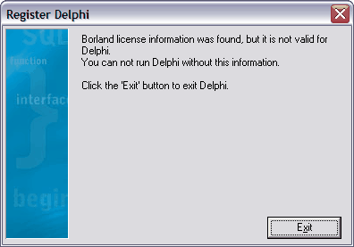

DRKB Explorer
Проблемы регистрации Delphi
01.01.2010
После горячей перезагрузки компьютера Delphi 7 при запуске стала выдавать такое окошечко:
Переустановка не помогла. Подскажите, как решить проблему.
1. С файлом чистки реестра соседствует программа регистрации D7Reg.exe. Она и позволяет ввести ключ заново.
2. Вообще можно просто один раз сохранить файлы из c:\Documents and Settings\username\.borland\ и жить спокойно
Взято из http://forum.sources.ru